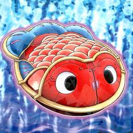

↑こいつは一体何者かと言うと
簡単に言えばブリキの金魚です
彼は遊戯王zexalに登場するモンスターカードの一つ
テキスト
このモンスターが召喚に成功した時、レベル４のモンスターを一体特殊召喚する
という効果を持ったモンスターカードである。しかし、召喚時にしか効果を使えないのでこのカード以外のカードをださなければならない。
このカードが最初の手札にあればすぐにでもランク４エクシーズ召喚が可能に！
さらに、特にこれといった制限も特にないのでレベル４チューナーをだしてレベル８シンクロも可能デスク！
シンクロとエクシーズの詳細は↓こちら
シンクロモンスター
召喚方法はモンスターの条件によって違うが大抵「チューナー＋チューナー以外のモンスター」となっている
モンスターには種類があって何も効果を持たない通常モンスター、効果を持つ効果モンスター、シンクロに必要なチューナーモンスター、が存在する。条件にある「チューナー＋チューナー以外」というのはチューナーモンスターのレベル＋チューナー以外（通常モンスターと効果モンスター）のレベルを合計した数値分のシンクロモンスターが出てくる
例 レベル３のチューナー＋レベル５のチューナーでレベル８のシンクロモンスターが出てくる
エクシーズモンスター
召喚方法は非常に簡単！何でもいいから同じレベルのモンスターを２〜５体位重ねればOK！（特殊なやつじゃ無い限り普通２体）
トップ
工事中